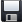
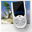

La gestion des diapositives s'effectue à l'aide des boutons de la barre d'outils
Ces boutons sont regroupés dans quatre onglets : Fichier / Projet / Générer le film et Aide
Les commandes de gestion des projets
Le tableau suivant résume
les principales commandes de gestion :
|
Bouton dans la barre d'outils |
Commande du menu Fichier |
Au clavier |
Action |
 |
Nouveau |
CTRL+N | Permet de créer
un nouveau projet vierge en utilisant les
paramètres de projet par défaut
définis dans la boite
de configuration. (Si le projet en cours a des modifications qui n'ont pas encore été sauvegardé, ffDiaporama propose de sauvegarder le projet en cours.) |
 |
Ouvrir |
CTRL+O |
Permet d'ouvrir un
projet déjà existant. La boite de
sélection de fichier apparaît et vous
permet de sélectionner le projet à ouvrir (Si le projet en cours a des modifications qui n'ont pas encore été sauvegardé, ffDiaporama propose de sauvegarder le projet en cours.) Note : Si le projet contient des fichiers qui ont été déplacés ou renommés, ffDiaporama n'arrivera pas à les ré-ouvrir. Dans ce cas, une boite de dialogue apparaît vous permettant de sélectionner un nouveau fichier. |
 |
Ouvrir récent |
Permet d'ouvrir un
projet ouvert récemment. (Si le projet en cours a des modifications qui n'ont pas encore été sauvegardé, ffDiaporama propose de sauvegarder le projet en cours.) |
|
|  |
Enregistrer |
CTRL+S |
Permet d'enregistrer
le projet en cours dans un fichier projet. Si vous n'aviez pas encore sauvegarder le projet, la boite de sélection de fichier à enregistrer apparaît et vous permet de sélectionner un fichier de destination. |
 |
Enregistrer sous |
Permet d'enregistrer
le projet en cours dans un autre fichier projet. La boite de sélection de fichier à enregistrer apparaît et vous permet de sélectionner un fichier de destination. |
|
| Options |
Permet de régler
les options du programme. La boite de réglage des options du programme apparaît. |
||
| Quitter |
CTRL+W |
Permet de quitter
ffDiaporama. (Si le projet en cours a des modifications qui n'ont pas encore été sauvegardé, ffDiaporama propose de sauvegarder le projet en cours.) |
Les commandes de gestion des diapositives
Le tableau suivant résume
les principales commandes de gestion :
| Bouton
dans la barre d'outils |
Commande
du menu Projet |
Au
clavier |
Action |
| Ajouter un titre |
Permet d'ajouter une séquence de type titre : Une image vide et transparente est ajoutée au projet et est affichée dans la barre du temps. | ||
| Ajouter des fichiers |
INS |
Permet d'ajouter un
ou plusieurs fichiers de type photo ou vidéo :
Une fenêtre de sélection de fichier
apparaît permettant de sélectionner un ou
plusieurs fichiers. Note : Chaque fichier ainsi sélectionné est ajouté au projet dans l'ordre alphabétique des noms de fichier ou dans l'ordre numérique des prises de vues. Les appareils photo numérotant les clichés au fur et à mesure qu'ils sont pris, utiliser l'ordre numérique permet de constituer le projet dans l'ordre chronologique des prises de vues. |
|
| Ajouter un projet |
Permet d'ajouter les diapositives d'un projet existant, à la fin du projet en cours : Une fenêtre de sélection de fichier apparaît permettant de sélectionner un projet. Les diapositives ainsi que l'ensemble des réglages de diapositive, de musique et d'arrière-plan du projet à ajouter sont ajoutés au projet en cours. | ||
 |
Couper |
CTRL+X |
Permet de couper la diapositive en cours (la supprime de la ligne de temps et la place dans le presse papier). |
 |
Copier |
CTRL+C |
Permet de copier la diapositive en cours (en plaçant une copie de la diapositive dans le presse papier) |
 |
Coller |
CTRL+V |
Permet de coller la
diapositive actuellement dans le presse papier dans
la ligne de temps. |
 |
Éditer |
Ouvre
un petit menu qui permet d'accéder aux
fonctions de modification : |
|
| F5 |
Propriété de l'arrière plan (équivalent à un double click sur la piste d'arrière plan | ||
| F6 |
Propriété de la diapositive (équivalent à un double click sur la piste de montage) | ||
| F7 |
Propriété de la musique (équivalent à un double click sur la piste musical) | ||
| F8 |
Propriété de la transition (équivalent à un double click sur la transition entrante) | ||
 |
Supprimer |
DEL |
Permet de supprimer la diapositive en cours d'édition. |
Note : Les insertions de
diapositive se font soit à la fin du projet, soit
après la diapositive en cours, en fonction de l'option
"ajouter les nouvelles diapositives (à la fin du projet
ou après la diapositive en cours)" de la boite
de dialog de configuration.
Les commandes de génération de film
Le tableau suivant résume
les principales commandes de génération de film :
| Bouton
dans la barre d'outils |
Commande
du menu Générer le film |
Action |
| Lecteur et smartphone |
Permet
de paramétrer la génération du film
du projet en sélectionnant un équipement
depuis la base de
données des équipements. La boite de dialogue de génération du film depuis un équipement apparaît. |
|
| Système
multimédia |
||
 |
Pour Internet |
|
 |
Avancé |
Permet de
paramétrer la génération du film du
projet en mode avancée, c'est à dire en
réglant chaque paramètre. La boite
de dialogue de génération du film
apparaît. |
Les commandes d'aide
Le tableau suivant résume
les principales commandes d'aide :
| Bouton
dans la barre d'outils |
Commande
du menu aide |
Action |
|  |
A propos de |
Permet
d'ouvrir la boite de dialogue "A propos de..." Cette boite affiche des informations de version, de licence et des informations sur le système. |
 |
Aide et support (F1) |
Ouvre le
sommaire de l'aide de ffDiaporama |
 |
Nouveautés |
Ouvre la page Blog/Nouvelles du site Internet de ffDiaporama |
Voir aussi
- Sommaire de la documentation de ffDiaporama
- Principes de fonctionnement de ffDiaporama
- La barre de temps
- Les fichiers projet de ffDiaporama
ffDiaporama 1.1